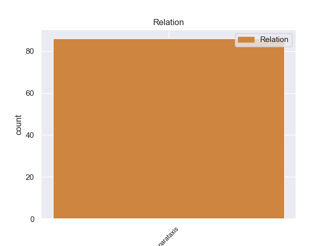
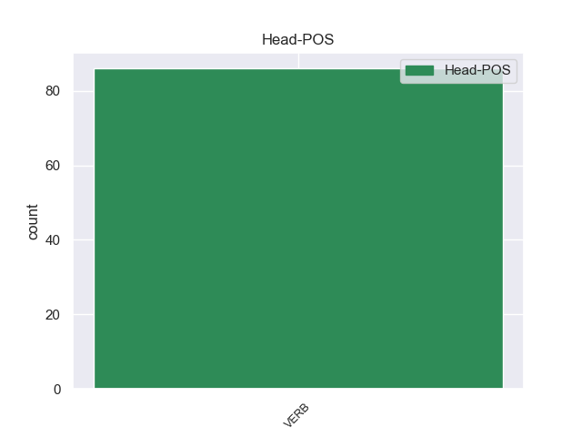
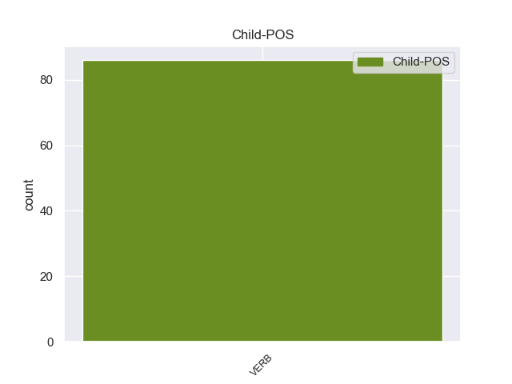

Distribution of features within this leaf



Agreement Rules sorted by frequency.
- When the dependent token is the parataxis(parataxis) of the head token, and the dependent token is VERB.
1 Parli _ _ _ _ 0 _ _ _
2 di _ _ _ _ 0 _ _ _
3 #liberalizzazioni _ _ _ _ 0 _ _ _
4 e _ _ _ _ 0 _ _ _
5 tassisti _ _ _ _ 0 _ _ _
6 ti _ _ _ _ 0 _ _ _
7 insultano _ _ _ _ 0 _ _ _
8 , _ _ _ _ 0 _ _ _
9 di _ _ _ _ 0 _ _ _
10 #Grillo _ _ _ _ 0 _ _ _
11 e _ _ _ _ 0 _ _ _
12 i _ _ _ _ 0 _ _ _
13 grillini _ _ _ _ 0 _ _ _
14 ti _ _ _ _ 0 _ _ _
15 attaccano _ _ _ _ 0 _ _ _
16 . _ _ _ _ 0 _ _ _
17 Adoro adorare VERB V Mood=Ind|Number=Sing|Person=1|Tense=Pres|VerbForm=Fin 0 _ _ _
18 #twitter _ _ _ _ 0 _ _ _
19 , _ _ _ _ 0 _ _ _
20 ci _ _ _ _ 0 _ _ _
21 fa fare VERB V Mood=Ind|Number=Sing|Person=3|Tense=Pres|VerbForm=Fin 17 parataxis _ _
22 sentire _ _ _ _ 0 _ _ _
23 tutti _ _ _ _ 0 _ _ _
24 più _ _ _ _ 0 _ _ _
25 importanti _ _ _ _ 0 _ _ _
26 . _ _ _ _ 0 _ _ _
Disagree Examples:
1 @user1 _ _ _ _ 0 _ _ _
2 @user2 _ _ _ _ 0 _ _ _
3 *----* _ _ _ _ 0 _ _ _
4 capìì capire VERB V Mood=Ind|Number=Sing|Person=1|Tense=Past|VerbForm=Fin 0 _ _ _
5 :) _ _ _ _ 0 _ _ _
6 ricordo ricordare VERB V Mood=Ind|Number=Sing|Person=1|Tense=Pres|VerbForm=Fin 4 parataxis _ _
7 i _ _ _ _ 0 _ _ _
8 primi _ _ _ _ 0 _ _ _
9 giorni _ _ _ _ 0 _ _ _
10 che _ _ _ _ 0 _ _ _
11 mi _ _ _ _ 0 _ _ _
12 facevano _ _ _ _ 0 _ _ _
13 male _ _ _ _ 0 _ _ _
14 le _ _ _ _ 0 _ _ _
15 dita _ _ _ _ 0 _ _ _
16 .. _ _ _ _ 0 _ _ _
17 XD _ _ _ _ 0 _ _ _
1 Io _ _ _ _ 0 _ _ _
2 ho _ _ _ _ 0 _ _ _
3 scoperto scoprire VERB V Gender=Masc|Number=Sing|Tense=Past|VerbForm=Part 0 _ _ _
4 ora _ _ _ _ 0 _ _ _
5 qual' _ _ _ _ 0 _ _ _
6 é _ _ _ _ 0 _ _ _
7 il _ _ _ _ 0 _ _ _
8 mio _ _ _ _ 0 _ _ _
9 nome _ _ _ _ 0 _ _ _
10 indiano _ _ _ _ 0 _ _ _
11 ! _ _ _ _ 0 _ _ _
12 Prova provare VERB V Mood=Imp|Number=Sing|Person=2|Tense=Pres|VerbForm=Fin 3 parataxis _ _
13 ci _ _ _ _ 0 _ _ _
14 anche _ _ _ _ 0 _ _ _
15 Tu _ _ _ _ 0 _ _ _
16 : _ _ _ _ 0 _ _ _
17 ... _ _ _ _ 0 _ _ _
18 http://t.co/4Be45pRy _ _ _ _ 0 _ _ _
1 Il _ _ _ _ 0 _ _ _
2 28 _ _ _ _ 0 _ _ _
3 il _ _ _ _ 0 _ _ _
4 #cdm _ _ _ _ 0 _ _ _
5 di _ _ _ _ 0 _ _ _
6 il _ _ _ _ 0 _ _ _
7 governo _ _ _ _ 0 _ _ _
8 #monti _ _ _ _ 0 _ _ _
9 discuterà discutere VERB V Mood=Ind|Number=Sing|Person=3|Tense=Fut|VerbForm=Fin 0 _ _ _
10 #liberalizzazioni _ _ _ _ 0 _ _ _
11 e _ _ _ _ 0 _ _ _
12 crescita _ _ _ _ 0 _ _ _
13 ... _ _ _ _ 0 _ _ _
14 speriamo sperare VERB V Mood=Imp|Number=Plur|Person=1|Tense=Pres|VerbForm=Fin 9 parataxis _ _
15 che _ _ _ _ 0 _ _ _
16 i _ _ _ _ 0 _ _ _
17 primi _ _ _ _ 0 _ _ _
18 provvedimenti _ _ _ _ 0 _ _ _
19 siano _ _ _ _ 0 _ _ _
20 rapidi _ _ _ _ 0 _ _ _
21 e _ _ _ _ 0 _ _ _
22 senza _ _ _ _ 0 _ _ _
23 ostacoli _ _ _ _ 0 _ _ _
24 .. _ _ _ _ 0 _ _ _
1 RT _ _ _ _ 0 _ _ _
2 @user _ _ _ _ 0 _ _ _
3 : _ _ _ _ 0 _ _ _
4 Sono _ _ _ _ 0 _ _ _
5 fatta fare VERB V Gender=Fem|Number=Sing|Tense=Past|VerbForm=Part 0 _ _ _
6 così _ _ _ _ 0 _ _ _
7 . _ _ _ _ 0 _ _ _
8 Mi _ _ _ _ 0 _ _ _
9 piace piacere VERB V Mood=Ind|Number=Sing|Person=3|Tense=Pres|VerbForm=Fin 5 parataxis _ _
10 fare _ _ _ _ 0 _ _ _
11 la _ _ _ _ 0 _ _ _
12 stupida _ _ _ _ 0 _ _ _
13 con _ _ _ _ 0 _ _ _
14 gli _ _ _ _ 0 _ _ _
15 amici _ _ _ _ 0 _ _ _
16 , _ _ _ _ 0 _ _ _
17 fare _ _ _ _ 0 _ _ _
18 battute _ _ _ _ 0 _ _ _
19 , _ _ _ _ 0 _ _ _
20 e _ _ _ _ 0 _ _ _
21 poi _ _ _ _ 0 _ _ _
22 chiuder _ _ _ _ 0 _ _ _
23 mi _ _ _ _ 0 _ _ _
24 in _ _ _ _ 0 _ _ _
25 me _ _ _ _ 0 _ _ _
26 stessa _ _ _ _ 0 _ _ _
27 quando _ _ _ _ 0 _ _ _
28 torno _ _ _ _ 0 _ _ _
29 a _ _ _ _ 0 _ _ _
30 casa _ _ _ _ 0 _ _ _
31 . _ _ _ _ 0 _ _ _
1 @user _ _ _ _ 0 _ _ _
2 #Grillo _ _ _ _ 0 _ _ _
3 non _ _ _ _ 0 _ _ _
4 è _ _ _ _ 0 _ _ _
5 candidato candidare VERB V Gender=Masc|Number=Sing|Tense=Past|VerbForm=Part 0 _ _ _
6 . _ _ _ _ 0 _ _ _
7 Anche _ _ _ _ 0 _ _ _
8 a _ _ _ _ 0 _ _ _
9 me _ _ _ _ 0 _ _ _
10 infastidisce infastidire VERB V Mood=Ind|Number=Sing|Person=3|Tense=Pres|VerbForm=Fin 5 parataxis _ _
11 il _ _ _ _ 0 _ _ _
12 populismo _ _ _ _ 0 _ _ _
13 , _ _ _ _ 0 _ _ _
14 ma _ _ _ _ 0 _ _ _
15 M5S _ _ _ _ 0 _ _ _
16 è _ _ _ _ 0 _ _ _
17 ( _ _ _ _ 0 _ _ _
18 purtroppo _ _ _ _ 0 _ _ _
19 ) _ _ _ _ 0 _ _ _
20 l' _ _ _ _ 0 _ _ _
21 unica _ _ _ _ 0 _ _ _
22 novità _ _ _ _ 0 _ _ _
23 positiva _ _ _ _ 0 _ _ _
24 in _ _ _ _ 0 _ _ _
25 politica _ _ _ _ 0 _ _ _
26 . _ _ _ _ 0 _ _ _